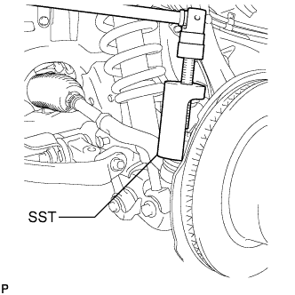
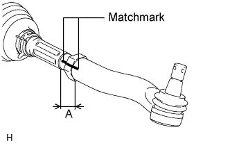
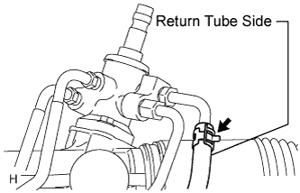
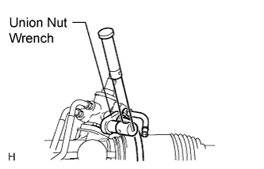

STEERING LINKAGE > REMOVAL |
| 1. PLACE FRONT WHEELS FACING STRAIGHT AHEAD |
| 2. REMOVE ENGINE ASSEMBLY |
for 2UZ-FE:
Remove the engine (Click here).
for 1GR-FE:
Remove the engine (Click here).
for 1VD-FTV:
Remove the engine (Click here).
| 3. REMOVE FRONT WHEELS |
| 4. LOOSEN NO. 1 FRONT STABILIZER BRACKET LH |
w/ KDSS:
Loosen the bracket (Click here).
w/o KDSS:
Loosen the bracket (Click here).
| 5. LOOSEN NO. 1 FRONT STABILIZER BRACKET RH |
| 6. REMOVE FRONT STABILIZER LINK ASSEMBLY LH |
w/ KDSS:
Remove the front stabilizer link (Click here).
w/o KDSS:
Remove the front stabilizer link (Click here).
| 7. REMOVE FRONT STABILIZER LINK ASSEMBLY RH |
| 8. REMOVE FRONT NO. 1 STABILIZER BRACKET LH |
w/ KDSS:
Remove the stabilizer bracket (Click here).
w/o KDSS:
Remove the front bracket (Click here).
| 9. REMOVE FRONT NO. 1 STABILIZER BRACKET RH |
| 10. REMOVE FRONT STABILIZER BAR |
w/ KDSS:
Remove the stabilizer bar (Click here).
w/o KDSS:
Remove the stabilizer bar (Click here).
| 11. DISCONNECT NO. 2 STEERING INTERMEDIATE SHAFT |
for Manual Tilt and Telescopic:
Disconnect the No. 2 steering intermediate shaft (Click here).
for Power Tilt and Power Telescopic:
Disconnect the No. 2 steering intermediate shaft (Click here).
| 12. DISCONNECT TIE ROD END SUB-ASSEMBLY LH |
Remove the cotter pin and nut.
 |
Using SST, disconnect the tie rod end LH from the steering knuckle.
| 13. DISCONNECT TIE ROD END SUB-ASSEMBLY RH |
| 14. REMOVE TIE ROD END SUB-ASSEMBLY LH |
 |
Put matchmarks on the tie rod end LH and steering rack end.
Measure length A and record the measurement.
Remove the tie rod end LH.
| 15. REMOVE TIE ROD END SUB-ASSEMBLY RH |
| 16. DISCONNECT PRESSURE FEED TUBE ASSEMBLY |
 |
Remove the clamp and disconnect the pressure feed tube (return tube side) from the power steering link.
 |
Using a union nut wrench, disconnect the pressure feed tube (pressure feed tube side) from the power steering link.
 |
Remove the 2 bolts and disconnect the pressure feed tube clamp.
| 17. REMOVE FRONT SUSPENSION REBOUND STOPPER SUB-ASSEMBLY LH |
 |
Remove the 3 bolts and suspension rebound stopper LH.
| 18. REMOVE FRONT SUSPENSION REBOUND STOPPER SUB-ASSEMBLY RH |
 |
Remove the 3 bolts and suspension rebound stopper RH.
| 19. REMOVE POWER STEERING LINK ASSEMBLY |
 |
Remove the 3 bolts, 3 nuts and power steering link.